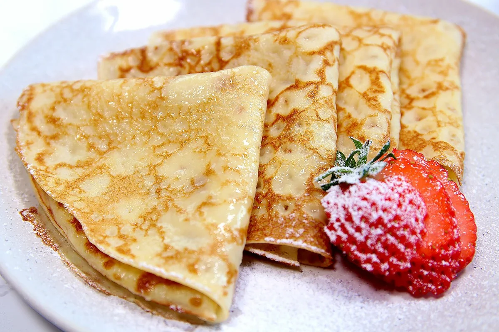

Блины молочные тонкие
Продукты
- молоко — 700 мл
- яйца куриные — 2–3 шт.
- масло растительное — 23 ст. ложки
- мука — 300 г
- сахар — 2–3 ст. ложки
- соль — 1–2 щепотки
Этапы готовки
- Подготовка смеси
-
В глубокую миску разбить яйца
-
Добавить сахар и соль
-
Тщательно взбить яйца с сахаром при помощи венчика или миксера
-
Добавить молоко. Хорошо взбить смесь
- Правильное добавление муки
-
Просеять муку
-
Небольшими порциями добавлять муку, хорошо взбивая блинное тесто венчиком, чтобы не было комков
-
Добавить растительное масло. Перемешать.
Тесто для блинов готово к выпечке.
- Жарка
-
Хорошо разогреть сковороду, первый раз налить 1 ч. ложку растительного масла и распределить его по сковороде
-
Налить тесто на сковороду (половину или 2/3 половника, зависит от размера сковороды)
-
Быстро вращая сковороду, распределить тесто тонким слоем по дну сковородки.
-
Печь тонкий блин на среднем огне с одной стороны 1–2 минуты, до румяности.
-
Затем перевернуть и печь блин с другой стороны еще примерно 0,5 минуты.
- Возможные добавки
- мёд
- джем
- сметана
- красная икра

Приятного чаепития!